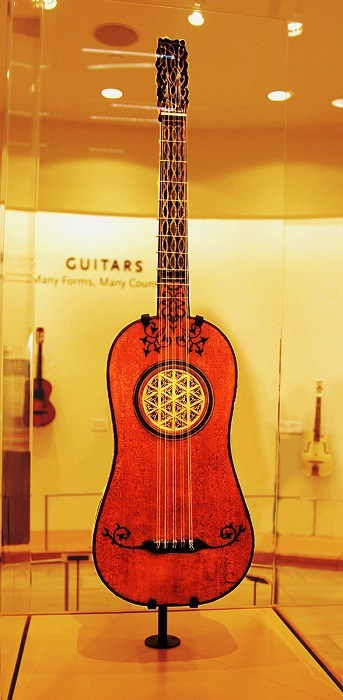
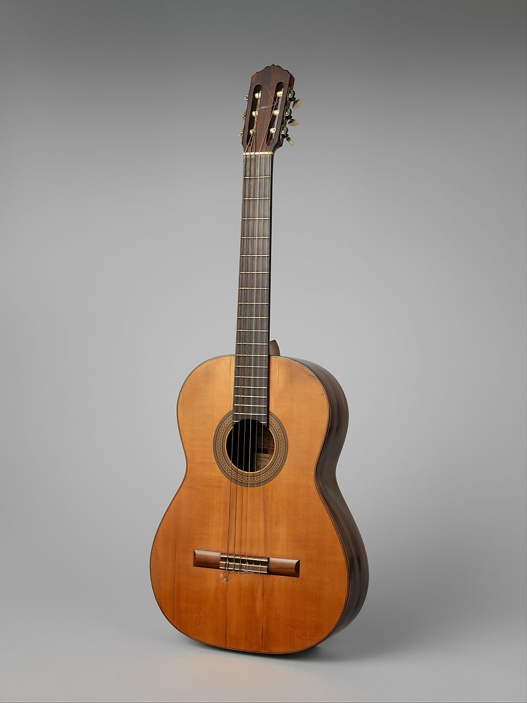

GUITAR
The history of the guitar generally goes back to two instruments, the oud and the lute, which predate written history. The first ancient pictorial record of a lute-like stringed instrument first appeared in 3500 to 3200 BCE in Southern Mesopotamia – Iraq, which is now Nasiriyah City. The image depicts a female crouching on a boat; the position of her hands on the instrument indicates she is playing an instrument. The lute had evolved significantly by the end of the Renaissance – many lutes had up to 20 or 30 strings – but the lute-like shape of the instrument was fading in popularity. By the 15th and 16th centuries, musicians in Spain began to favor instruments featuring the familiar curved shape we now associate with guitars.
The early guitar was narrower and deeper than the modern guitar, with a less pronounced waist. It was closely related to the vihuela, the guitar-shaped instrument played in Spain in place of the lute. The guitar originally had four courses of strings, three double, the top course single, that ran from a violin-like pegbox to a tension bridge glued to the soundboard, or belly; the bridge thus sustained the direct pull of the strings. In the belly was a circular sound hole, often ornamented with a carved wooden rose. The 16th-century guitar was tuned C–F–A–D′, the tuning of the centre four courses of the lute and of the vihuela.
From the 16th to the 19th century several changes occurred in the instrument. A fifth course of strings was added before 1600; by the late 18th century a sixth course was added. Before 1800 the double courses were replaced by single strings tuned E–A–D–G–B–E′, still the standard tuning.